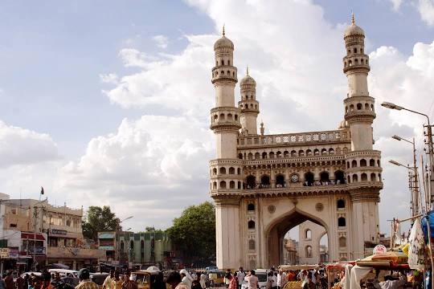

Places I visited
| Visited Place Image | Information about the Visited palce | Place |
|---|---|---|
| > |
The Charminar (lit.'four minarets') is a mosque and monument located in Hyderabad, Telangana, India. Constructed in 1591, the landmark is a symbol of Hyderabad and officially incorporated in the emblem of Telangana[3] The Charminar's long history includes the existence of a mosque on its top floor for more than 425 years. While both historically and religiously significant, it is also known for its popular and busy local markets surrounding the structure, and has become one of the most frequented tourist attractions in Hyderabad. Charminar is also a site of numerous festival celebrations, such as Eid-ul-adha and Eid al-Fitr,[4] as it is adjacent to the city's main mosque, the Makkah Masjid. |
Hyderabad |
 > > |
The Salar Jung Museum is an art museum located at Dar-ul-Shifa, on the southern bank of the Musi River in the city of Hyderabad, Telangana, India. It is one of the notable National Museums of India.[1] Originally a private art collection of the Salar Jung family, it was endowed to the nation after the death of Salar Jung III. It was inaugurated on 16 December 1951. It has a collection of sculptures, paintings, carvings, textiles, manuscripts, ceramics, metallic artifacts, carpets, clocks, and furniture from Japan, China, Burma, Nepal, India, Persia, Egypt, Europe, and North America. It is one of the largest museums in the world.[2] |
Hyderabad |
 |
Golconda Fort (Telugu: Gollakonda, lit. "shepherds' hill"), is a fortified citadel built by the Qutb Shahi dynasty (c. 1321-1687) as the capital of the Golconda Sultanate, located in Hyderabad, Telangana, India. Because of the vicinity of diamond mines, especially Kollur Mine, Golconda flourished as a trade centre of large diamonds, known as the Golconda Diamonds. The region has produced some of the world's most famous diamonds, including the colourless Koh-i-Noor (now owned by the United Kingdom), the blue Hope (United States), the pink Daria-i-Noor (Iran), the white Regent (France), the Dresden Green (Germany), and the colourless Orlov (Russia), Nizam and Jacob (India), as well as the now lost diamonds Florentine Yellow, Akbar Shah and Great Mogul. The complex was put by UNESCO on its "tentative list" to become a World Heritage Site in 2014, with others in the region, under the name Monuments and Forts of the Deccan Sultanate (despite there being a number of different sultanates).[1] |
Hyderabad |
| > |
The Charminar (lit.'four minarets') is a mosque and monument located in Hyderabad, Telangana, India. Constructed in 1591, the landmark is a symbol of Hyderabad and officially incorporated in the emblem of Telangana[3] The Charminar's long history includes the existence of a mosque on its top floor for more than 425 years. While both historically and religiously significant, it is also known for its popular and busy local markets surrounding the structure, and has become one of the most frequented tourist attractions in Hyderabad. Charminar is also a site of numerous festival celebrations, such as Eid-ul-adha and Eid al-Fitr,[4] as it is adjacent to the city's main mosque, the Makkah Masjid. |
Hyderabad |